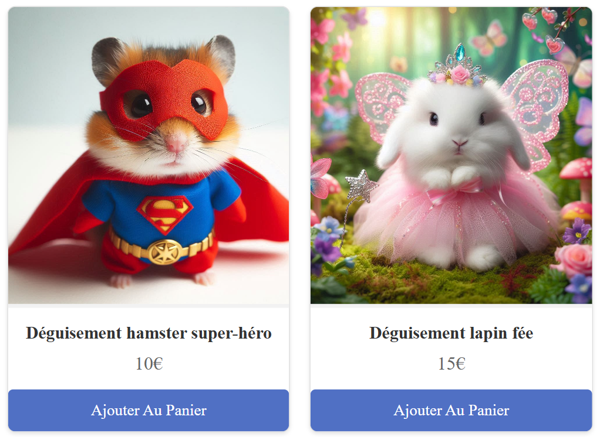

Bonjour, je suis Zainab OTMANI
J’ai commencé en 2023 un BUT informatique sans connaissances ni compétences dans ce domaine, et j’ai du rapidement assimiler de nombreuses notions notamment en programmation.
J'ai appris à développer le front-end de sites web en utilisant HTML et CSS, ce qui concerne tout ce que l'utilisateur voit et avec quoi il interagit directement, comme la mise en page, le design et l'interface. Plus récemment, j'ai eu l'occasion de travailler sur le back-end, en utilisant PHP et SQL. Cela consiste à gérer les données et la logique derrière un site web, comme la création de bases de données et leur connexion avec le front-end.
Concernant le développement, j’ai acquis lors de projets universitaires des connaissances en algorithmie, et en programmation orienté objet. Plus récemment, j’ai acquis des notions plus complexes, comme la complexité, la récursivité, ou encore l’application des principes SOLID avec des patterns designs. Enfin, nous avions pu réaliser une interface IHM grâce au javaFx et SceneBuilder.
 Projet PAP
Projet PAP
 Projet CTF